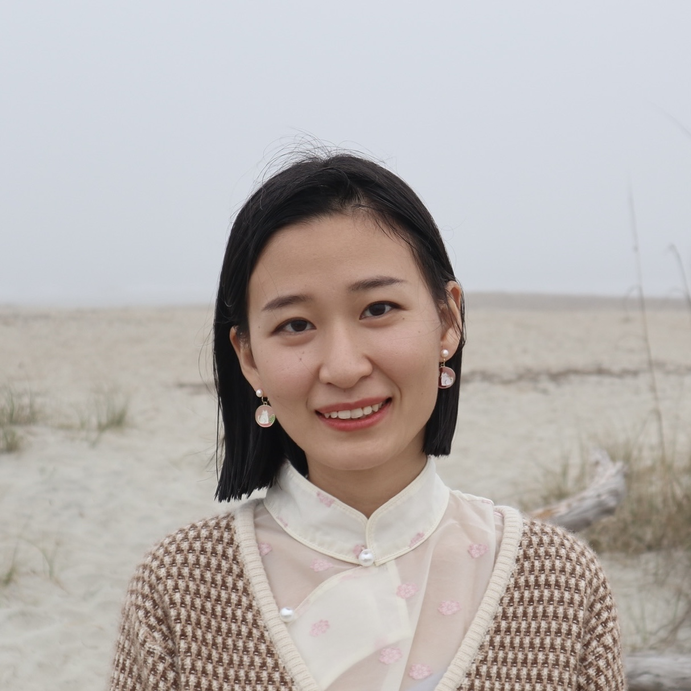
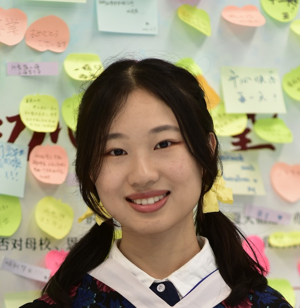

PhD candidate, Biostatistics
since Fall 2021
"My research interests include causal inference, graphical models, and semiparametric statistics. Through my work, I aim to develop statistical methods that enable robust causal conclusions in the presence of data challenges such as missing data and unmeasured confounding. Outside of academia, I enjoy cooking, photography, and spending time with my cats.

PhD student, Biostatistics
since Fall 2025
"My research focuses on causal inference, especially causal mediation and path-specific analysis, with an emphasis on methodological development, practical statistical implementation, and applications in health disparities. Outside of research, I am interested in swimming, cooking, and psychology."
Postdoc trainee, Biostatistics
since summer 2025
"My research lies at the intersection of causal inference and environmental health. My current work develops dimension reduction methods for causal inference with high-dimensional continuous exposures and mediators, motivated by studies of the health effects of environmental mixtures. More broadly, I am interested in developing statistical methods for drawing reliable conclusions from complex observational data, including problems involving preferential sampling in model-based geostatistics and data fusion for population health monitoring and surveillance."